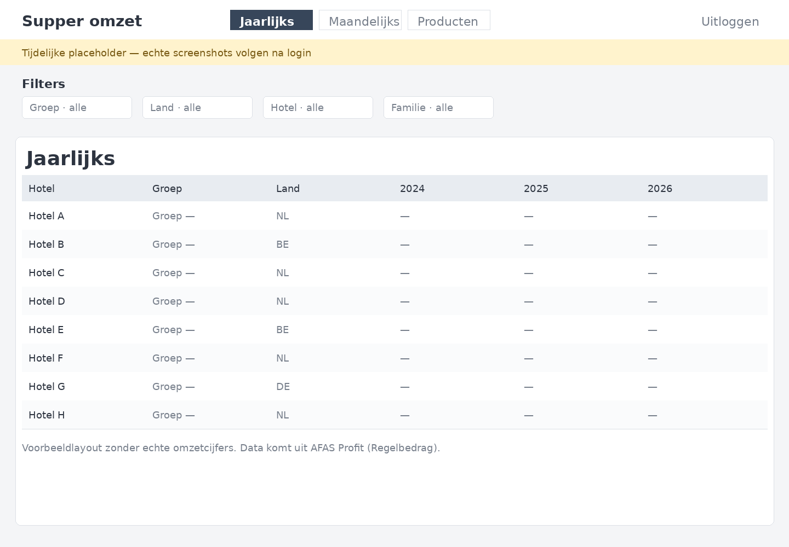
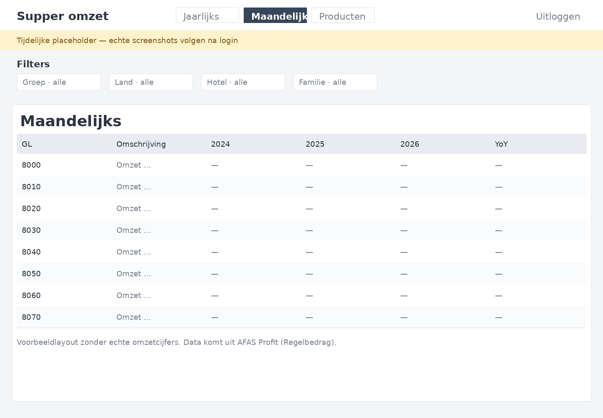
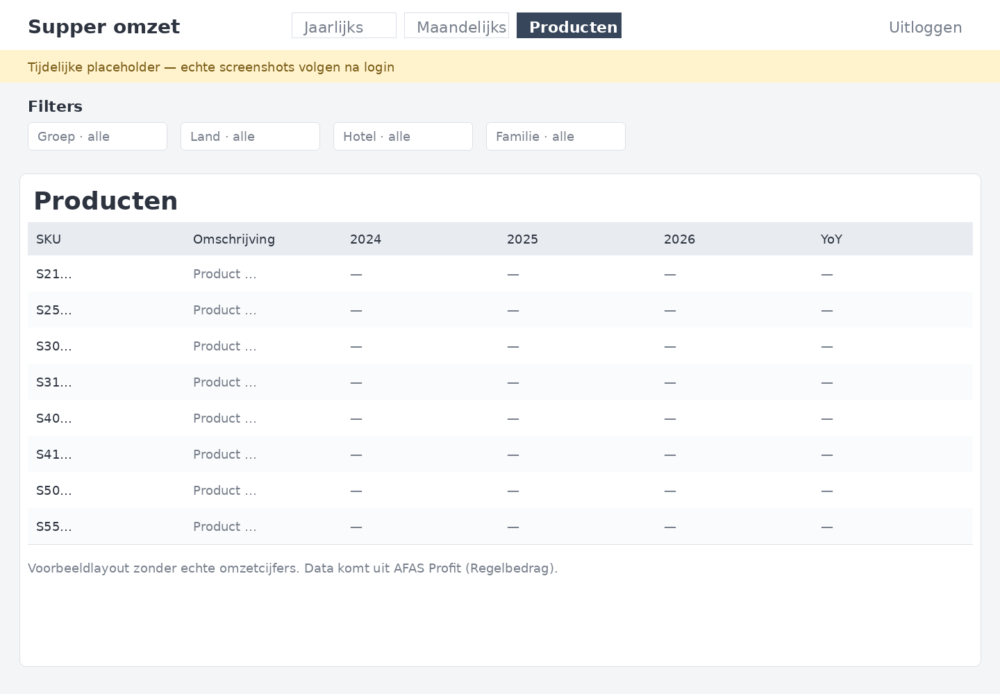

Case
Omzetdashboard gekoppeld aan AFAS
Voor Supper Services bouwde ik een omzetdashboard op AFAS-data. Het vervangt het Excel-werkboek met tabs Jaarlijks, Maandelijks en Producten: omzetcijfers uit factuurregels, zonder handmatige exports voor iedere vraag.



Vraag
Hoe zie je omzet per hotel, maand en product zonder Excel?
Christian Gebeld (Supper) bekeek omzet in een AFAS Excel-werkboek: tabs voor Jaarlijks, Maandelijks en Producten. Filters en jaar-op-jaar vergelijkingen vroegen steeds opnieuw om exports en handwerk.
Het dashboard leest AFAS Profit-factuurregels en somt omzet altijd op
Regelbedrag. Filters voor groep, land, hotel en familie werken tegelijk
(ÉN). Schermen: Jaarlijks (hotels), Maandelijks (grootboek) en Producten (SKU). Het
live dashboard is login-gated — geen open demo.
Resultaat
AFAS-cijfers in één webdashboard
De drie Excel-views staan nu als webschermen met deelbare filter-URL’s. Screenshots op deze pagina zijn tijdelijke placeholders; echte logged-in beelden volgen zodra inloggegevens beschikbaar zijn.
- Schermen Jaarlijks, Maandelijks en Producten.
- Filters op groep, land, hotel en productfamilie.
- Omzet uit AFAS Profit-factuurregels (
Regelbedrag). - Login op dashboard.supperservices.com — geen open demo.
Ook voor Supper: beheer van de WooCommerce-webshop. Of lees wanneer je Excel kunt behouden of vervangen.
Herkenbaar?
Draait jouw omzetoverzicht nog in Excel op AFAS-exports?
Laat zien welke tabbladen je nu bijhoudt en welke cijfers je elke week nodig hebt. Dan kijk ik of een dashboard op je bestaande data past.